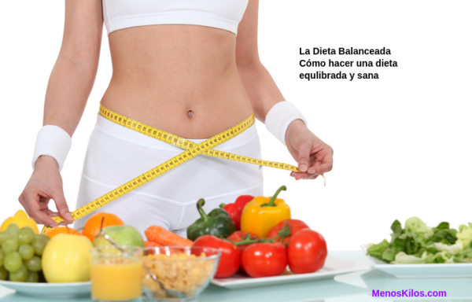

El nutricionista en el ámbito clínico, será quien se encargue de la mejora de la salud de los pacientes en los diversos centros hospitalarios tras un proceso de evaluación y diagnóstico que le llevarán a la intervención y el control de su situación nutricional. Para este tipo de perfiles es especialmente relevante realizar cursos de dietética que puedan ayudarles a realizar mejor sus diferentes responsabilidades.
El nutricionista clinico abogará por la protección de la salud de los pacientes , no solo mediante el establecimiento de una dieta en base a una patología, sino a través de la educación nutricional de los mismos y sus familiares.
El aporte de energía y nutrientes posterior a un periodo de entrenamiento o competición es el pilar diferencial entre un deportista con recuperación rápida o aquel con el riesgo de lesionarse o tener un bajo rendimiento en los siguientes eventos. Una buena recuperación post ejercicio debe aportar proteínas de alto valor biológico acompañadas de carbohidratos..
Por ello te ivitamos a visitarnos en nuestros centros especializados para recibir la mejor atención y calidad y los servicios

NutriSan
Nos puedes encontrar en los numeros 980967 ext 1104 o al 4793 ext 5. Estamos Ubicados en el barrio Unido de la ciudad